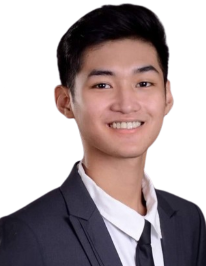

Mark David L. Basinillo
markdavid.basinillo.l@gmail.com | +639683256975
Blk 11 Lot 5, Phase 2A, Calle 72, Casabuena De Pulilan, CutCot, Pulilan, Bulacan
Summary
A strongly driven individual with a passion for learning and a strong interest in web development and web design.
Has a strong ability to collaborate in team settings and adapt to new challenges quickly. Seeking an opportunity
to gain hands on experience, expand my skills, and contribute to meaningful projects.
Education
College (Sep 2021 -2025)
Bulacan State University | Malolos, Bulacan
BS in Information Technology Major in Web and Mobile Application Development
Upper Secondary (Aug 2019 - May 2021)
Academia De Pulilan, Inc. | Pulilan, Bulacan
Science, Technology, Engineering, Mathematics (STEM) strand
Lower Secondary
Academia De Pulilan, Inc. | Pulilan, Bulacan
Pilot Section
Skills
Technical Skills
- Programming: Java, JavaScript, C++, and PHP
- Web Development: HTML, CSS, JavaScript, ReactJS
- UI/UX Design: Figma
- Photo Editing: Adobe Photoshop and Canva
- Video Editing: Adobe Premiere and Capcut
Soft Skills
- Leadership: Strong ability to lead and motivate teams to achieve goals.
- Creativity: Demonstrated ability to generate innovative ideas and solutions.
- Collaboration: Effective at working with diverse teams to achieve common objectives.
Awards
- Graduated with First Honorable Mention (Grade 6)
- Graduated with Honors (Junior and Senior Highschool)
- Citizen Advancement Training - Corps Commander (July 2018 - March 2019)
- Bulsu CICT 1st USB Ideathon Challenge - 1st Runner Up (April 2024)
- IRCITE 2024 ICP.Hub PH iThink Hackathon - Certificate of Participation (April 2024)